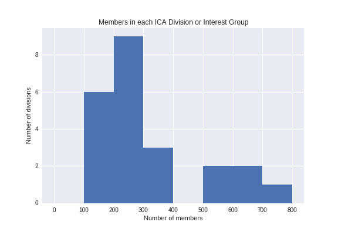
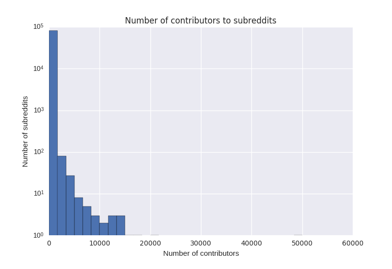
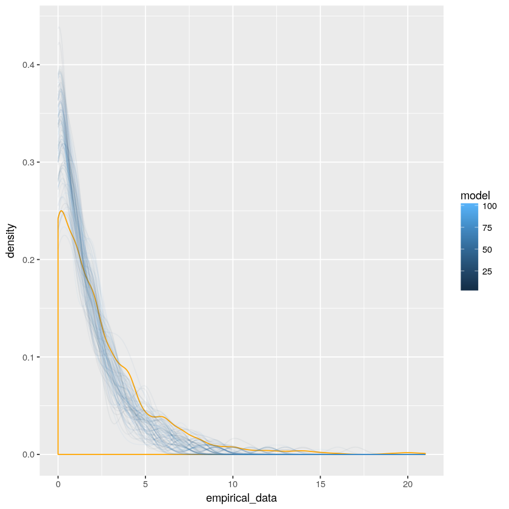

An agent-based model of community joining
Jeremy Foote
Northwestern University
Benjamin Mako Hill
University of Washington
Nate TeBlunthuis
Univeristy of Washington
An obvious(?) proposition ------------------------- The sizes of groups are determined by who joins them. --- How do we decide which groups to join? ----------- ICA groups look like this:  <aside class="notes">Different constraints lead to different distributions. This is the distribution of members per ICA division/interest group</aside> --- Online groups ------- Most online groups look like this:  --- Why? ======== --- Preferential Attachment --------- * One model that leads to these sorts of distributions is <span style="color:red;">preferential attachment</span> * Lots of other names * Matthew Effect * Cumulative advantage * Rich-get-richer * Basic idea is that past success causes current success --- Preferential attachment and community joining --------------- * Community joiner's decision process: * Identify the current size of all communities * Probabilistically join a group based on its current size --- One small problem ------ * It's not realistic <!-- .element: class="fragment" data-fragment-index="2" --> * People don't make decisions this way<!-- .element: class="fragment" --> * Difficult to explain newcomer success <!-- .element: class="fragment" --> --- Resnick et al. model ------- * In an influential HCI book, Resnick et al. suggest a more realistic model: * When deciding whether to join an early community people: <!-- .element: class="fragment" --> * Estimate the benefits they will get <!-- .element: class="fragment" --> * Participation benefits (information, friendship) <!-- .element: class="fragment" --> * Early adopter benefits (influence) <!-- .element: class="fragment" --> * Estimate the costs (new technology, learning new norms, etc.) <!-- .element: class="fragment" --> * Join if benefits exceed costs <!-- .element: class="fragment" --> --- Estimating eventual size -------- * People estimate the likelihood that a community will be successful and calculate an expected value. $$E[J] = P(S) * (EA + PB) - C$$ $$E[\neg J] = P(S) * (PB - C)$$ --- A few small problems ------------- * Only applies to single decision <!-- .element: class="fragment" --> * Some fuzzy pieces <!-- .element: class="fragment" --> * What is "success"? * How do users estimate $P(S)$? * Does this produce realistic distributions? <!-- .element: class="fragment" --> --- Our Goal ------ * Find a theoretically satisfying model that produces realistic distributions <aside class="notes">Should we also explicitly focus on community lifecycles?</aside> --- Agent-based modeling -------- * Basic structure: * Start with $N$ potential contributors (users) * Every "month" $X$ new communities are created * $n$ users are chosen at random * Each user is presented with a set of communities to consider * The user decides which community, if any, to join --- Constant Parameters ---------- * Simulate people deciding which community to join * Hold constant: * Participation benefits (PB) * $PB = log(S)$ * Early adopter benefits (EA) * $EA = log(S)/log(i + 1)$ * Cost --- Varying parameters --------------- * Choice set * Random * Topic-based * Popularity-based --- Varying parameters --------------- * Descision algorithm * Random * Preferential attachment * Learning * Max * Mean * Regression --- Regression model ---------------- * User's goal is to predict community size in 6 months; * People fit a linear model to the communities they have joined, using as predictors: * Community age when they joined * Community size when they joined * Months since joining * Current size --- Results -------- 